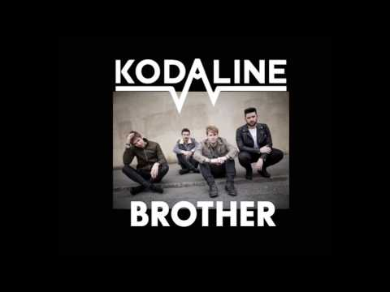
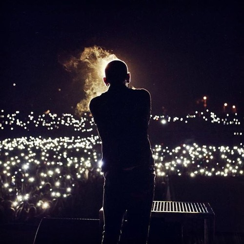
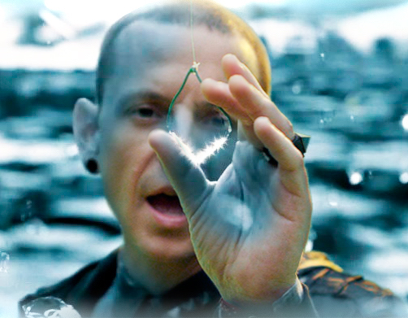
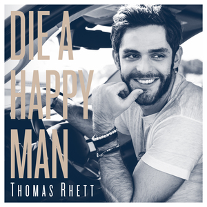

| Brother |
A great song about the bond of brother/sisters |
3:24 min |

|
Kodaline |
2.36M |
6/23/2017 |
51,192,209 |
944K |
7.9K |
| One More Light |
Very sad song! It was written about Amy Zaret's cancer and death. Then dedicated to Chester
Bennington who died from Suicide.
|
4:30 min |
 |
Linkin Park |
18.2M |
9/18/2017 |
211,015,174 |
2.3M |
39K |
| Castle of Glass |
The video shows a boy receive a visit from soldiers. His dad will not be coming
home from war
|
4:49 min |
 |
Linkin Park |
18.2M |
10/10/2012 |
504,935,736 |
3M |
75K |
| Die A Happy Man |
Love this song! Dedicated it to my wife. I could die happy just with her
by my side
|
4:03 min |
 |
Thomas Rhett |
1.37M |
9/17/2015 |
243,579,692 |
956K |
57K |